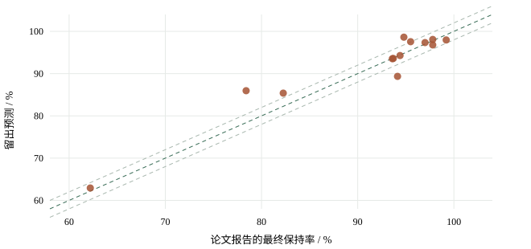

2026-10-29 · 已获授权的A/B分别验收 · 有限探索试验
电容保持率：两种输入方案，走到了哪一步
还没有模型全面达标。三电极“前20%实测＋随机森林”出现值得继续研究的结果，R²约0.908，平均误差约1.98个百分点；仍低于0.95，只有8个来源，不能称已获得可靠预测模型。
439次本轮固定拟合，已停止追加
19条 / 13来源曲线通过本轮证据核验
0个全面通过精度与泛化要求
先看实际结果
A只用材料和测试条件。B先取得新材料一小段真实循环结果，再预测最终保持率。以下按整个文献来源留出；单位“pp”是保持率的百分点，比如预测95%、实测93%，误差为2pp。
| 输入与模型 | 记录 / 来源 | R² | MAE/pp | RMSE/pp | 验收 |
|---|---|---|---|---|---|
| A 两电极：材料/工况 | 31 / 25 | -0.582 | 8.774 | 12.951 | 未通过 |
| A 三电极：材料/工况 | 47 / 34 | 0.246 | 4.545 | 6.308 | 未通过 |
| B 两电极：最多前10% · 预定线性主方案 | 4 / 4 | -0.832 | 4.239 | 4.315 | 未通过 |
| B 两电极：最多前20% · 预定线性主方案 | 6 / 6 | 0.311 | 4.288 | 5.763 | 未通过 |
| B 三电极：最多前10% · 预定线性主方案 | 7 / 6 | -0.998 | 7.180 | 14.716 | 未通过 |
| B 三电极：最多前20% · 预定线性主方案 | 13 / 8 | 0.607 | 4.056 | 6.033 | 未通过 |
| B 三电极：最多前20% · 随机森林候选 | 13 / 8 | 0.908 | 1.984 | 2.924 | 未通过 |
B线性主方案在训练前已指定；RF等比较候选也在训练前冻结。当前较好的RF结果仍是探索候选。不同数据覆盖不能直接作A/B因果比较。

为什么还不能宣布成功
同批简单参照：训练均值MAE=8.420pp，早期保持率直接沿用到终点MAE=3.124pp。RF相对后者平均改善36.5%，但配对来源重采样MAE差区间[-2.481,0.569]pp跨0，仍未证明稳定优势。
只有8个来源，R²来源重采样区间[-0.984,0.946]很宽；从汇总中去掉木粉炭化来源后R²=0.787。这不是删除后重训，而是检查结果受某来源影响多大。该区间未包含读图误差，也未消除模型选择影响。
只看早期读图界限≤2pp的同批预测：9条/7来源，R²=0.911, MAE=2.045, RMSE=3.016。未重训，也不能代替高质量新测试。
两电极MK9在前段接近平稳，后段出现明显下降：作者终值79.3%，20%RF预测约96.5%。这是早期窗口尚未显示后期拐点的真实困难案例，必须保留。
A/B原始数据覆盖不同，不能把0.246与0.908之差全归因于模型进步。10%/20%共同测试对象比较已另存，但训练来源数量仍不同，也不构成严格窗口因果实验。
读图质量也限制了结论。部分低分辨率绝对电容曲线归一化后，早期特征界限达±3～30pp。筛出≤2pp特征读数的同批预测仍未全面过线。3处图文终值争议暂时冻结，原值完整保留。A在新图核验前使用既有标签完成基准，这3条质量提示也限制A结果的解释，后续需前向复核。原始图点、核验规则和留出预测均可追溯。
接下来怎样投入更划算
- 优先B三电极早期辅助：这是当前更值得投入的候选方向。先补齐高分辨率原图或作者循环表，降低读图误差，保留相同目标圈数和工况；补更多独立来源及重复实验，而不是加密一条曲线充数。
- A继续作为无实测基准：固定输入的信息不足问题仍在。可优先同一活化化学/前驱体系列，并补实际孔结构、表面化学与测试条件；改变合同字段或范围时先讨论。窄范围不保证R²提高。
- 后期拐点另设计验证：保留MK9这类难例。后续可讨论允许更长早期窗口、带激活/衰减阶段的模型或异常提示；目前不自行放宽到30%/50%，也不强制所有保持率单调下降。
- 下一轮先登记再训练：RF候选在本轮已被看过分数；若选其继续，先冻结新数据/候选/评价方案，把后续全新来源留作真正测试。现有结果不能再次包装为未见验证。
验收建议为R²>0.95、MAE≤2pp、RMSE≤3pp、90%绝对误差≤5pp、来源尾部误差≤5pp、相对误差与简单参照同时合格；这些是项目工程目标，不是文献统一标准。另需未参加选择的新来源/批次验证，目前没有。
独立完成13042项核验：输入/原文/图像/代码哈希、整来源/材料/曲线隔离、早期窗口、训练折预处理和指标复算通过。旧63项保护源、v1.3的46项输出未变；无新增正式循环准入。
展开：所有预定模型的成绩
| 任务 | 模型 | R² | MAE/pp | RMSE/pp | MAPE/% | 全数值门槛通过 |
|---|---|---|---|---|---|---|
| A_2E | fixed_Matern_GPR | -0.376 | 8.167 | 12.078 | 8.680 | False |
| A_2E | random_forest | -0.582 | 8.774 | 12.951 | 9.288 | False |
| A_2E | ridge | -1.156 | 10.088 | 15.119 | 10.768 | False |
| A_2E | small_BP_MLP | -0.808 | 9.411 | 13.846 | 10.075 | False |
| A_2E | training_mean | -0.079 | 6.167 | 10.697 | 6.541 | False |
| A_2E | xgboost | -1.166 | 9.469 | 15.153 | 10.163 | False |
| A_3E | fixed_Matern_GPR | -0.084 | 5.630 | 7.564 | 6.293 | False |
| A_3E | random_forest | 0.246 | 4.545 | 6.308 | 5.051 | False |
| A_3E | ridge | -0.270 | 6.888 | 8.187 | 7.551 | False |
| A_3E | small_BP_MLP | -0.452 | 6.913 | 8.754 | 7.695 | False |
| A_3E | training_mean | -0.058 | 5.149 | 7.471 | 5.776 | False |
| A_3E | xgboost | 0.111 | 4.884 | 6.848 | 5.420 | False |
| B_2E_early10 | GPR_early_residual | -0.973 | 4.152 | 4.478 | 4.308 | False |
| B_2E_early10 | RF_early_residual | -1.147 | 4.390 | 4.672 | 4.559 | False |
| B_2E_early10 | RF_static_residual | -1.147 | 4.390 | 4.672 | 4.559 | False |
| B_2E_early10 | XGB_early_residual | -0.801 | 3.126 | 4.279 | 3.316 | False |
| B_2E_early10 | early_linear_extrapolation | -8.970 | 7.794 | 10.067 | 7.876 | False |
| B_2E_early10 | early_persistence | -0.932 | 3.307 | 4.432 | 3.517 | False |
| B_2E_early10 | ridge_early_residual | -0.832 | 4.239 | 4.315 | 4.374 | False |
| B_2E_early10 | ridge_static_residual | -0.964 | 4.310 | 4.468 | 4.477 | False |
| B_2E_early10 | training_mean | -0.778 | 3.753 | 4.251 | 3.910 | False |
| B_2E_early20 | GPR_early_residual | -0.445 | 6.434 | 8.344 | 7.274 | False |
| B_2E_early20 | RF_early_residual | -0.343 | 6.239 | 8.045 | 7.096 | False |
| B_2E_early20 | RF_static_residual | -0.463 | 6.714 | 8.397 | 7.586 | False |
| B_2E_early20 | XGB_early_residual | -0.240 | 4.932 | 7.732 | 5.796 | False |
| B_2E_early20 | early_linear_extrapolation | -3.887 | 13.961 | 15.348 | 15.167 | False |
| B_2E_early20 | early_persistence | -0.892 | 6.212 | 9.551 | 7.287 | False |
| B_2E_early20 | ridge_early_residual | 0.311 | 4.288 | 5.763 | 4.911 | False |
| B_2E_early20 | ridge_static_residual | -1.028 | 8.952 | 9.886 | 9.833 | False |
| B_2E_early20 | training_mean | -0.440 | 6.275 | 8.331 | 7.076 | False |
| B_3E_early10 | GPR_early_residual | 0.853 | 3.639 | 3.997 | 4.217 | False |
| B_3E_early10 | RF_early_residual | 0.865 | 3.078 | 3.832 | 3.593 | False |
| B_3E_early10 | RF_static_residual | 0.857 | 3.216 | 3.941 | 3.741 | False |
| B_3E_early10 | XGB_early_residual | 0.699 | 4.762 | 5.708 | 5.451 | False |
| B_3E_early10 | early_linear_extrapolation | -15.291 | 30.875 | 42.024 | 39.036 | False |
| B_3E_early10 | early_persistence | 0.753 | 4.045 | 5.174 | 4.926 | False |
| B_3E_early10 | ridge_early_residual | -0.998 | 7.180 | 14.716 | 10.085 | False |
| B_3E_early10 | ridge_static_residual | -1.852 | 10.121 | 17.584 | 13.576 | False |
| B_3E_early10 | training_mean | -0.396 | 10.336 | 12.300 | 12.738 | False |
| B_3E_early20 | GPR_early_residual | 0.895 | 2.332 | 3.124 | 2.709 | False |
| B_3E_early20 | RF_early_residual | 0.908 | 1.984 | 2.924 | 2.279 | False |
| B_3E_early20 | RF_static_residual | 0.895 | 2.322 | 3.122 | 2.660 | False |
| B_3E_early20 | XGB_early_residual | 0.894 | 2.416 | 3.129 | 2.698 | False |
| B_3E_early20 | early_linear_extrapolation | -1.704 | 10.005 | 15.835 | 12.728 | False |
| B_3E_early20 | early_persistence | 0.823 | 3.124 | 4.054 | 3.699 | False |
| B_3E_early20 | ridge_early_residual | 0.607 | 4.056 | 6.033 | 5.165 | False |
| B_3E_early20 | ridge_static_residual | 0.120 | 5.371 | 9.031 | 7.003 | False |
| B_3E_early20 | training_mean | -0.277 | 8.420 | 10.880 | 10.308 | False |